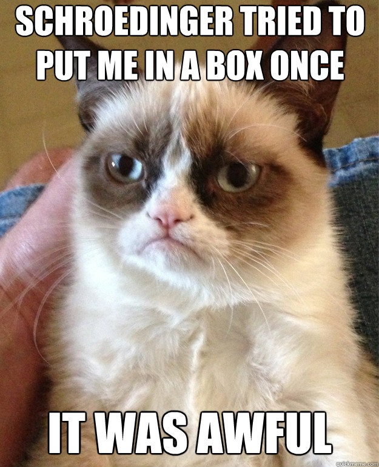
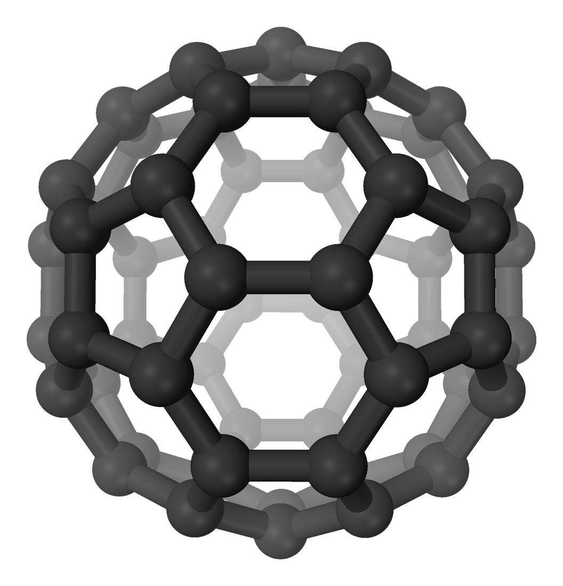
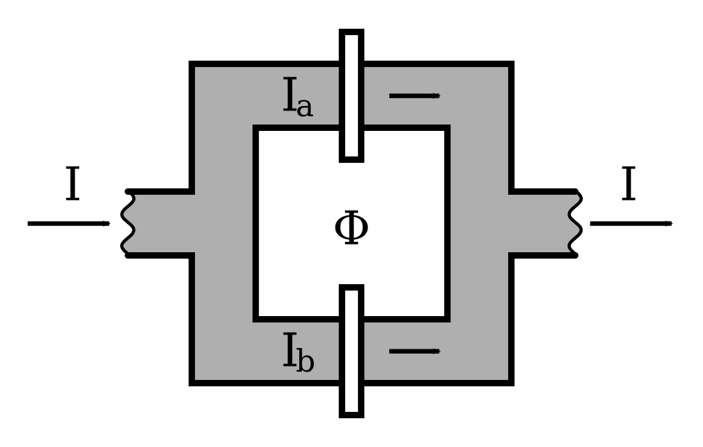
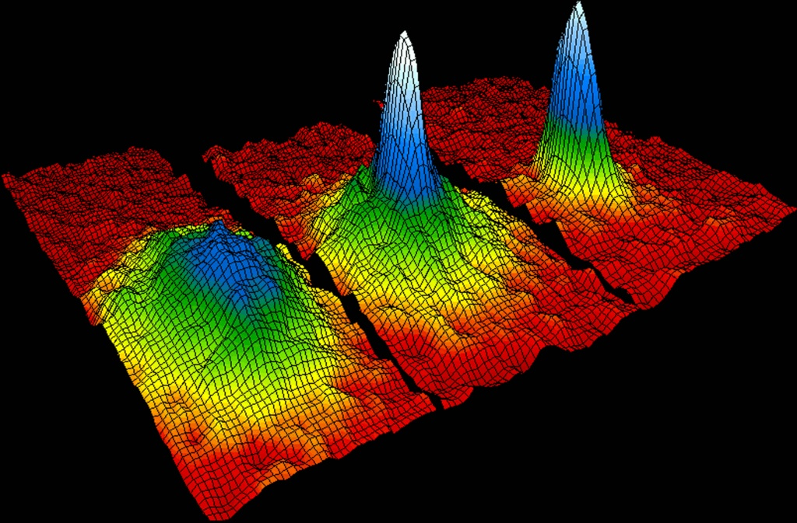
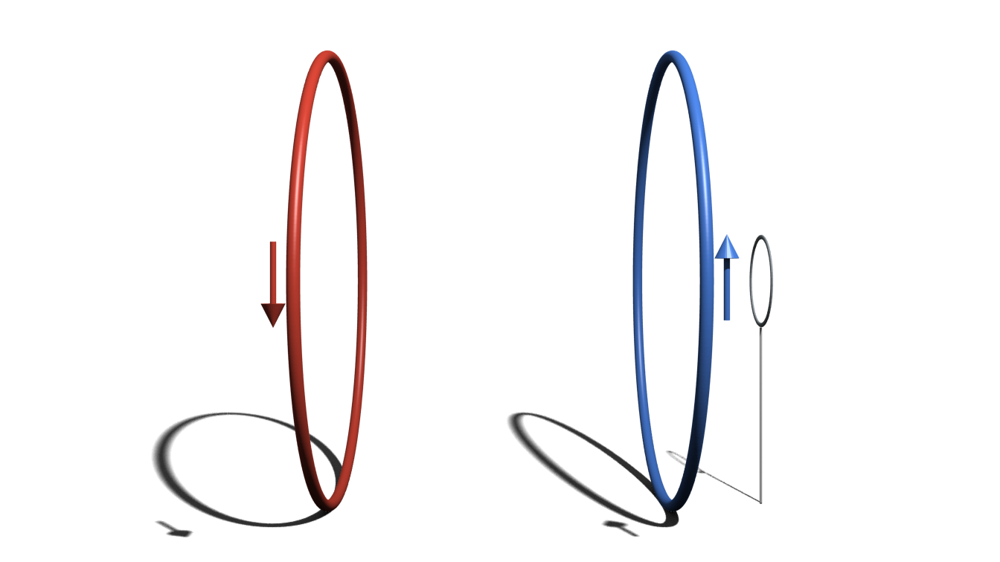
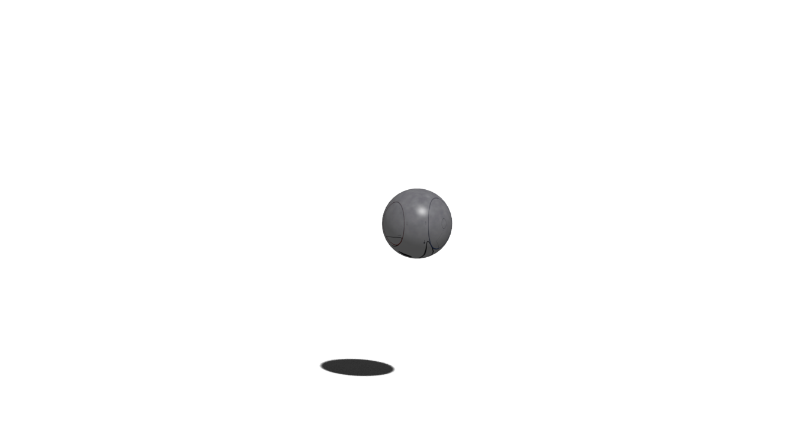

$\newcommand{\ket}[1]{\left|#1\right\rangle}$
$\newcommand{\braket}[2]{\left \langle #1 \right|\left. #2\right\rangle}$
$\newcommand{\dd}{\mathrm d}$
Why care about cats?

Quantum Measurement Problem: Wave function collapse
Look for violations of QM:
- Small length scales
- Short times & long lengths
- Cats
Experiments

Matter-wave interferometry

SQUIDs

Bose-Einstein Condensates


Opto- & Magnetomechanics
Are they macroscopic?
Macroscopicity Measures
Disconnectivity
Measures:
- Extensive difference $\Lambda$: difference of states vs reference value (e.g. $\Delta \Phi / \Phi_0$)
- Disconnectivity D: degree of entanglement, possibly reduced entropy
Disconnectivity
Examples:
- GHZ State of N particles: D = N
- C60: D ≈ 106
- Atomic ensembles: D ≈ 107
- SQUIDs: D ≈ 1010
DSC Measure
Idea: Compare realistic (e.g. BEC) ↔ GHZ states
$$\ket{\psi} = \frac{1}{\sqrt{K}} \left( \ket{0}^{\otimes N} + \ket{\epsilon}^{\otimes N} \right)$$
where $\left| \braket{0}{\epsilon} \right|^2 = 1 - \epsilon^2$.
Through decoherence rate / max distillation:
$$N_{eff} = N \epsilon^2$$
BM Measure
Problems with Disconnectivity / DSC:
- Dependence on preferred set of basis states
- Particle number ≠ Macroscopicity
Solution: Use preferred observable instead of basis
BM Measure
Superposition in observable A:
$$\ket{\psi} = \int \braket{a}{\psi}\ket{a} \dd a\\ \left|\braket{a}{\psi}\right|^2 = f(a - a_1) + f(a - a_2)$$
Orthogonal state reached after time $T \propto (a_2 - a_1)^{-1}$.
$$M = \frac{T_{\text sing}}{T_{\text sup}} = \frac{\left|a_1 - a_2\right|}{\Delta a}$$
BM Measure
Examples:
- Single Qubit: M = 1
- C60: M ≈ 5
- SQUIDs: M ≈ 33
- Optomechanical $\ket{0} + \ket{1}$: M = 1 (?)
KWDC Measure
How many fundamental subsystems do we have to measure to collapse $\ket{A} + \ket{B}$ with precision $\delta$?
$$C_\delta := \frac{N}{n_\text{min}}$$